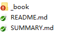

Gitbook Configuration
关于
- gitbook.com 提供托管，协作功能和易于使用的编辑器，具体操作在docs上有详尽说明
- 提供内容导出功能，格式可以是PDF, ePub 或 Mobi
- gitbook旧版本已经弃用，访问自动跳转 gitbook新官网
注：由于Gitbook进行了改版，之前的某些安装命令已不再适用，故在2022/1更新一版安装手册，适用目前的Gitbook版本。
安装步骤
安装Node.js
官网下载，确认版本，v4.0.0及以上可用。
1 | |
注：windows用户推荐下载.msi文件，仅点击node.exe是不会安装npm包的（所以在后续使用npm安装时会发现根本没有）
npm安装Gitbook
npm在Node.js下载时也已经安装完毕，直接进行Gitbook安装
1 | |
注：如果出现以下错误，应该降低node版本，卸载重新安装低版本或者使用nvm进行node版本管理（但是需要注意也有很多坑），推荐对node进行多版本管理，因为Gitbook支持的node及相关npm版本是在是有点低......有时使用npm install时会提示node版本过低需要升级......
检查版本
1 | |
基本使用
创建book，相当于创建一个样板书，初始化结构目录
1 | |
如果要将书创建到一个新目录中，可以指定文件路径
1 | |
编译预览
进入新建的gitbook文件夹下执行：
1 | |
等价于在根目录指定文件夹：
1 | |
该命令实际上会先调用gitbook build编译书籍，完成之后打开服务，监听在4000端口上。也可以使用gitbook build命令来生成网页而不开启服务器。
浏览器搜索http://localhost:4000查看当前效果:
基本的搜索、字体、主题以及分享都已经存在，且页面非常简洁，符合我对于Gitbook的期待 :)
运行serve命令会自动生成一个_book文件夹
，里面是一些配置文件 
配置
初始化后生成两个md文件，README.md和SUMMARY.md
SUMMARY.md中只有两行：二级标题和一个跳转到README.md的链接
1 | |
而README.md中则更为简单，只有标题，其他内容等待填充
1 | |
目录包括三部分内容：
- SUMMARY.md
- README.md
- book.json
可以理解为SUMMARY 是gitbook的骨架结构或章节目录，README 则是每章填充的内容，book.json 作为主体配置文件，有各种插件供用户使用。
常用命令
1 | |
部署方式
1.github绑定发布
新建仓库
进入github个人主页，新建一个仓库，可不勾选创建README文件（Gitbook目录已自带）
进行git操作，根据提示在工作区依次执行:
1 | |
已把本地的Gitbook文件夹成功推送到test仓库中了，再次查看主页，不再是一个空仓库，有上传内容且也可以进行clone等操作。
关联仓库主页/域名
点击Setting找到GitHub Pages选项，选择下Source，master或者自己再新拉一个分支都可。
设置完毕，可以通过github.io/仓库名这种方式进行访问。
如果之前已经将github.io绑定域名，github非常友好地自动将新建的仓库放到相应的二级域名下，提示Your site is published at http://绑定的域名/该仓库名/ ，把github默认的仓库主页替换成绑定的域名进行访问就可以看到相应页面了。
关联hexo页面
既然绑了二级域名，索性在博客里也显示出来，新建一个页面就好
1 | |
首先查看一下站点配置文件中relative_link: false选项是否设置为false，主题的配置文件找到menu，新建一个子目录gitbook:二级域名
，重新生成部署即可
2.服务器（Nginx）
1 | |
3.gitbook.com社区公开
对于使用存在疑问，可以先访问FAQ进行问题查找
参考文章：
https://github.com/GitbookIO/gitbook
https://www.jianshu.com/p/421cc442f06c